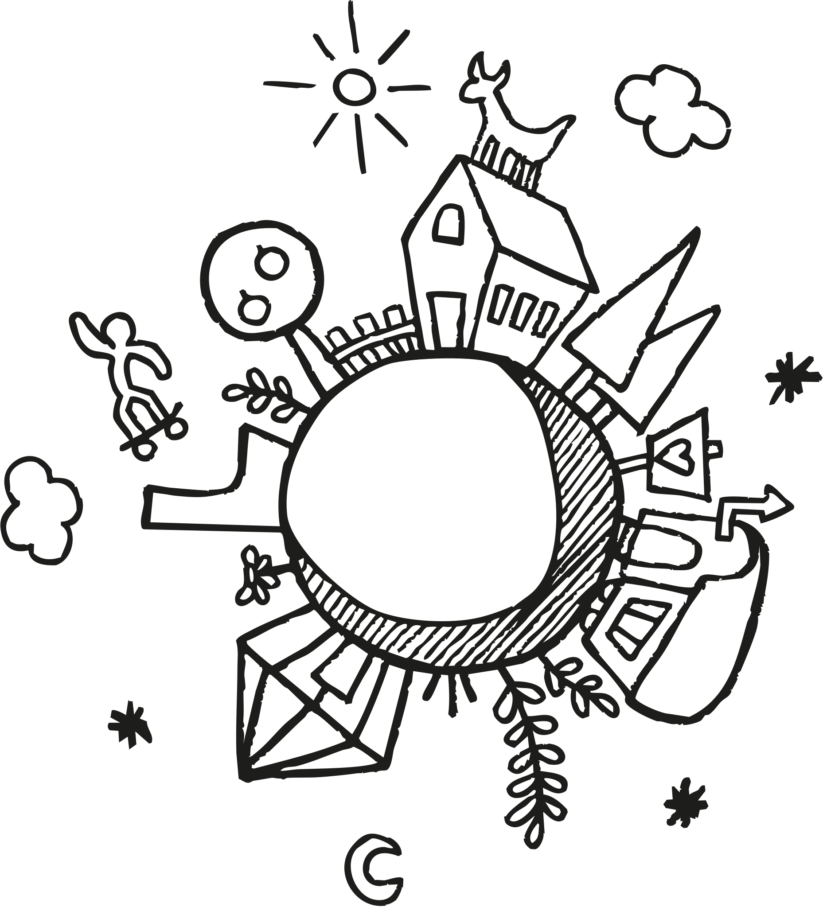
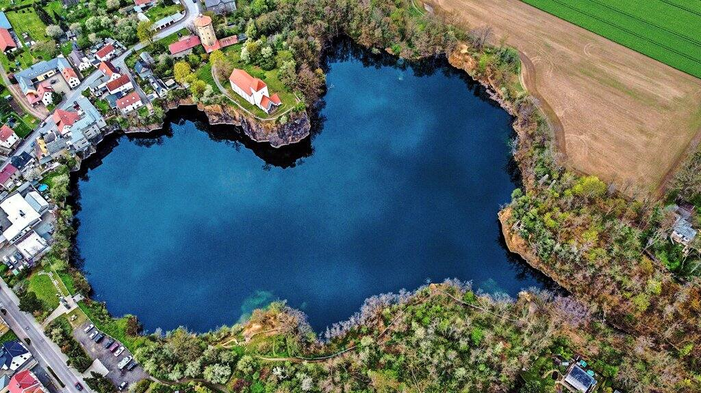

Was wir bauen
Ein gemeinschaftlich getragener Wohn- und Arbeitsort für 5 bis 15 Personen auf einem Hof- oder Gutshofgrundstück im Raum Leipzig.


Genossenschaft in Gründung · Gemeinschaftliches Wohn- und Arbeitsprojekt im ländlichen Raum bei Leipzig
Projektkonzept als PDF herunterladen
Ein gemeinschaftlich getragener Wohn- und Arbeitsort für 5 bis 15 Personen auf einem Hof- oder Gutshofgrundstück im Raum Leipzig.
Das Projekt finanziert sich über mehrere Standbeine.
Nachhaltige Kapitalanlage mit sozialem und regionalem Wirkungsbezug.
Gesucht: 4.000–10.000 m², Hof- oder Gutshofcharakter, Raum Leipzig.
Kommunen und regionale Partner sind ebenfalls willkommen.
Kapital zur Finanzierung von Kauf und Sanierung des Standortes, ergänzend zu Eigenkapital der Genossenschaftsmitglieder und öffentlichen Fördermitteln.
Für ein persönliches Gespräch kontaktieren
Thomas Engelmann
M.Sc. Elektrotechnik und Informationstechnik

Robin Dunkel
Tischlermeister

Stefanie Schmidt
Ergotherapeutin, B.A.

Tilo Gerlach
Dozent für Erwachsenenbildung, Grafikdesigner

Dirk Schwalenberg
Greenpeace-Teamleiter, Erlebnispädagoge